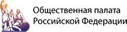

Площадка
ГТРК «Корстон»
Корстон — это гостиничный торгово-развлекательный комплекс, в котором есть все для удобства туристов:- гостиница класса 5 и 4 звезд в 411 номеров,
- 15 конфенц- и банкетных залов,
- рестораны и бары,
- торговая галерея,
- кинотеатр, боулинг, бильярд, детский парк,
- рядом с Корстоном Центральный парк культуры и отдыха им. М. Горького.
Официальный сайт корстона: www.korston.ru/kazan
Конференц-залы
Удобные, прекрасно оборудованные залы: 20 конференц и банкетных залов для аренды, включая самый большой в Казани – Бальный зал, вместимостью до 600 человек.
Площадь Бального зала – 1225 кв.м. Обзор сцены доступен всем гостям, благодаря отсутствию колонн.
Интерьер новых залов Прокофьев, Рахманинов, Шостакович и Чайковский, которые располагаются на втором этаже Korston Tower, выполнен в современном стиле.
Как проехать и что посетить
От Аэропорта до Корстона ходит автобус №97 с интервалом в 20 минут и такси. Заказывая номер в гостинице, уточните про возможность трансфера из/до Аэропорта в гостиницу.
В историческом центре Казани туристы посещают:- Кремль (мечеть Кул -Шариф, Благовещенский собор,башня Сююмбике и др),
- Крестовоздвиженскую церковь, где хранится икона Казанской Божьей матери,
- Старо-Татарскую слободу,
- Азимовскую мечеть и мечети Марджани, озеро Кабан,
- парк 1000-тия и многое другое.
Телефоны экстренных служб
При чрезвычайных ситуациях..............01
С мобильного телефона.........................112 или 012
Полиция.......................................................02
Скорая медицинская помощь...............03
Организаторы
АНО «Ассоциация синдрома Ретта» зарегистрирована в Казани в 2011 году, но начала свою деятельность раньше. Сначала это были два, потом три ребенка. К 2011 году мы помогали 27-ми детям. Сейчас в Ассоциации 153 ребенка с этим редким генетическим заболеванием. Мы помогаем детям в России, Армении, Беларуси, Украине, Таджикистане, Узбекистане, Казахстане, Молдавии.


Тимуца Ольга Вадимовна
Директор Ассоциации содействия больным синдромом Ретта
rettsyndrome@mail.ruГости
На Конгресс приглашены представители Совета Федерации, осударственной Думы РФ, члены Общественной палаты РФ, специалисты Министерства здравоохранения, других профильных министерств, пациентских организаций, ученые и специалисты, родителей детей с синдромом Ретта, все заинтересованные граждане.
